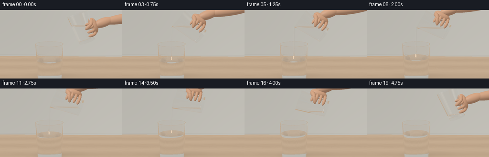
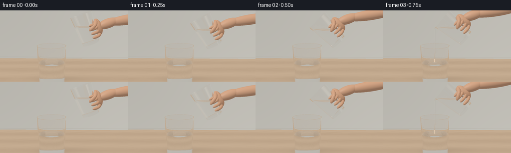
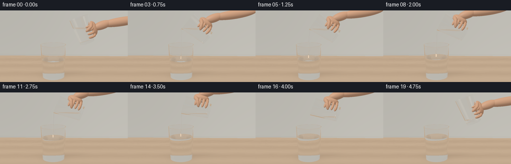
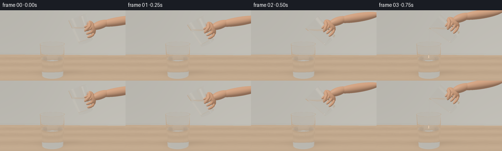

CODING AGENTS AS PIXEL WORLD MODELS
traex/GPT-6.1-Sol · phygen_138
点击播放 · 原生 RGB 像素
逐轮保存的候选
回放视频、检查图与代码变化。
每份候选均可单独播放。实际图片检查记录在下方工具轨迹中。
候选 01播放与检查图
点击播放 · 原生 RGB 像素


展开代码变化
--- 上一保存版本
+++ 本次保存版本
@@ -0,0 +1,297 @@
+from pathlib import Path
+import json, math, time
+import numpy as np
+from PIL import Image
+import artifact_io
+
+ROOT=Path(__file__).resolve().parent
+SPEC=json.loads((ROOT/'task_spec.json').read_text())
+W,H=SPEC['width'],SPEC['height']
+SS=3
+DT=np.float32
+rng=np.random.default_rng(418)
+
+def norm(x):
+ return x/np.maximum(np.linalg.norm(x,axis=-1,keepdims=True),1e-12)
+def smooth(x):
+ x=np.clip(x,0,1); return x*x*(3-2*x)
+def mix(a,b,t): return np.asarray(a)*(1-t)+np.asarray(b)*t
+
+# A simple analytic, non-learned ray renderer. All geometries are built here.
+def environment(d):
+ col=np.tile(np.array([.56,.59,.58],DT),(len(d),1))
+ v=np.clip(d[:,1]*.52+.52,0,1)
+ col=col*(.73+.35*v[:,None])
+ # A broad daylight window, and a slim fill reflector, outside the field of view.
+ window=np.exp(-((d[:,0]+.57)/.19)**12-((d[:,1]-.37)/.40)**12-((d[:,2]-.60)/.6)**12)
+ fill=np.exp(-((d[:,0]-.78)/.10)**8-((d[:,1]-.15)/.50)**8-((d[:,2]-.4)/.75)**8)
+ col+=window[:,None]*np.array([1.8,1.9,2.0])+fill[:,None]*np.array([.95,.83,.70])
+ return col
+
+def wood(p):
+ x,z=p[:,0],p[:,2]
+ # Restrained pale oak with long, fine organic grain and boards.
+ phase=z*62 + 2.8*np.sin(x*.85+z*2.5)+.6*np.sin(x*3.2+z*9)
+ grain=.014*np.sin(phase)+.008*np.sin(phase*2.73)+.005*np.sin(z*260+x*2)
+ broad=.027*np.sin(z*5+x*.14)
+ c=np.array([.60,.43,.285])[None,:]+(grain+broad)[:,None]*np.array([1,.82,.60])
+ seam=np.exp(-(np.sin((z+.33)*2.25)/.014)**2)*.028
+ c-=seam[:,None]
+ return c
+
+LIGHTS=[(norm(np.array([-3.5,5,4.])),np.array([.70,.74,.77])),(norm(np.array([3,3,1.])),np.array([.18,.145,.11]))]
+
+def background(o,d):
+ col=environment(d)
+ t=np.divide(-o[:,1],d[:,1],out=np.full(len(d),1e6),where=np.abs(d[:,1])>1e-8)
+ table=(t>0)&(d[:,1]<0)
+ if np.any(table):
+ p=o[table]+t[table,None]*d[table]
+ c=wood(p)
+ # Soft contact shadow and faint daylight reflection around the standing glass.
+ q=((p[:,0]+.48)/.68)**2+(p[:,2]/.51)**2
+ shadow=.18*np.exp(-q*1.9)+.08*np.exp(-((p[:,0]-.01)/1.05)**2-((p[:,2]+.4)/.37)**2)
+ c*=1-shadow[:,None]
+ sheen=np.maximum(0,np.sum(d[table]*np.array([.45,-.75,-.45]),axis=1))**35
+ c+=sheen[:,None]*.07
+ col[table]=c
+ # Soft out-of-focus plaster wall beyond the tabletop.
+ t2=np.divide(-3.7-o[:,2],d[:,2],out=np.full(len(d),1e6),where=np.abs(d[:,2])>1e-8)
+ wall=(t2>0)&(~table|(t2<t))
+ if np.any(wall):
+ p=o[wall]+t2[wall,None]*d[wall]
+ lum=.89+.05*np.tanh(p[:,0]*.3)-.04*np.tanh(p[:,1]*.35)
+ c=lum[:,None]*np.array([.65,.63,.57])[None,:]
+ # Soft kitchen architectural line, deliberately unobtrusive.
+ c-=np.exp(-((p[:,1]-.08)/.018)**2)[:,None]*.045
+ col[wall]=c
+ return col
+
+class Glass:
+ def __init__(self,b,theta,h,r0,r1,level,receiver=False):
+ self.b=np.array(b,DT); self.h=h;self.r0=r0;self.r1=r1;self.k=(r1-r0)/h
+ self.R=np.array([[np.cos(theta),-np.sin(theta),0],[np.sin(theta),np.cos(theta),0],[0,0,1]],DT)
+ self.level=level;self.receiver=receiver;self.thick=.032;self.floor=.075
+ def hit(self,o,d,best):
+ ol=(o-self.b)@self.R; dl=d@self.R
+ n=len(o); tt=np.full(n,np.inf,DT); normals=np.zeros((n,3),DT); outside=np.ones(n,DT); inside=np.full(n,1.50,DT); typ=np.zeros(n,np.int8)
+ def accept(t,nlocal,valid,inner=False,kind=0):
+ nonlocal tt,normals,outside,typ
+ sel=valid&(t>1e-4)&(t<tt)&(t<best)
+ if not np.any(sel):return
+ tt[sel]=t[sel]; normals[sel]=nlocal[sel]@self.R.T
+ world_y=o[sel,1]+t[sel]*d[sel,1]
+ outside[sel]=np.where(inner&(world_y<self.level-1e-5),1.333,1.0)
+ typ[sel]=kind
+ for inner in [False,True]:
+ base=self.r0-(self.thick if inner else 0)
+ r=base+self.k*ol[:,1]
+ a=dl[:,0]**2+dl[:,2]**2-(self.k*dl[:,1])**2
+ bb=2*(ol[:,0]*dl[:,0]+ol[:,2]*dl[:,2]-r*self.k*dl[:,1])
+ c=ol[:,0]**2+ol[:,2]**2-r*r
+ disc=bb*bb-4*a*c; sq=np.sqrt(np.maximum(disc,0))
+ for sign in [-1,1]:
+ t=(-bb+sign*sq)/(2*a+1e-15)
+ p=ol+t[:,None]*dl; rr=base+self.k*p[:,1]
+ nl=norm(np.stack([p[:,0],-self.k*rr,p[:,2]],axis=1))
+ if inner:nl=-nl
+ valid=(disc>=0)&(p[:,1]>=(self.floor if inner else 0))&(p[:,1]<=self.h)
+ accept(t,nl,valid,inner)
+ for y,sgn,inner in [(0,-1,False),(self.floor,1,True),(self.h,1,False)]:
+ t=(y-ol[:,1])/(dl[:,1]+1e-15)
+ p=ol+t[:,None]*dl; rad2=p[:,0]**2+p[:,2]**2;rr=self.r0+self.k*y
+ valid=rad2<=rr*rr
+ if y==self.h:valid &= rad2>=(rr-self.thick)**2
+ nl=np.zeros((n,3),DT);nl[:,1]=sgn
+ accept(t,nl,valid,inner)
+ # The horizontal liquid surface is clipped to the inside of the tilted tumbler.
+ t=(self.level-o[:,1])/(d[:,1]+1e-15)
+ p=ol+t[:,None]*dl;rr=self.r0-self.thick+self.k*p[:,1]
+ valid=(p[:,1]>=self.floor+.00005)&(p[:,1]<=self.h-.001)&(p[:,0]**2+p[:,2]**2<rr*rr)
+ sel=valid&(t>1e-4)&(t<tt)&(t<best)
+ if np.any(sel):
+ tt[sel]=t[sel]; outside[sel]=1.;inside[sel]=1.333;typ[sel]=1
+ normals[sel]=[0,1,0]
+ return tt,normals,outside,inside,typ
+
+class Ellipsoid:
+ def __init__(self,c,r,R=None,skin=True):
+ self.c=np.array(c,DT);self.r=np.array(r,DT);self.R=np.eye(3,dtype=DT) if R is None else R;self.skin=skin
+ def hit(self,o,d,best):
+ p=((o-self.c)@self.R)/self.r;v=(d@self.R)/self.r
+ a=np.sum(v*v,axis=1);b=np.sum(p*v,axis=1);c=np.sum(p*p,axis=1)-1
+ det=b*b-a*c;t=(-b-np.sqrt(np.maximum(det,0)))/a
+ valid=(det>=0)&(t>1e-4)&(t<best)
+ return t,valid
+ def normal(self,p):return norm((((p-self.c)@self.R)/(self.r**2))@self.R.T)
+
+def capsule(a,b,r):
+ a=np.array(a);b=np.array(b);axis=norm(b-a)
+ u=norm(np.cross(axis,[0,0,1] if abs(axis[2])<.9 else [0,1,0]));v=np.cross(axis,u)
+ return Ellipsoid((a+b)/2,[r,np.linalg.norm(b-a)/2+r,r],np.stack([u,axis,v],axis=1).astype(DT))
+
+class Jet:
+ def __init__(self,start,end,radius):
+ self.start=np.array(start,DT);self.end=np.array(end,DT);axis=norm(self.start-self.end)
+ x=norm(np.cross([0,0,1],axis));z=np.cross(x,axis)
+ self.R=np.stack([x,axis,z],axis=1).astype(DT);self.h=np.linalg.norm(self.start-self.end);self.r=radius
+ def hit(self,o,d,best):
+ p=(o-self.end)@self.R;v=d@self.R
+ k=self.r*.2/self.h;radius=self.r*.80+k*p[:,1]
+ a=v[:,0]**2+v[:,2]**2-(k*v[:,1])**2
+ b=2*(p[:,0]*v[:,0]+p[:,2]*v[:,2]-radius*k*v[:,1]);c=p[:,0]**2+p[:,2]**2-radius**2
+ disc=b*b-4*a*c;sq=np.sqrt(np.maximum(disc,0))
+ tt=np.full(len(o),np.inf,DT);ns=np.zeros_like(o)
+ for sign in [-1,1]:
+ t=(-b+sign*sq)/(2*a+1e-15);q=p+t[:,None]*v;rr=self.r*.8+k*q[:,1]
+ valid=(disc>=0)&(t>1e-4)&(t<tt)&(t<best)&(q[:,1]>=0)&(q[:,1]<=self.h)
+ tt[valid]=t[valid];ns[valid]=norm(np.stack([q[valid,0],-k*rr[valid],q[valid,2]],axis=1))@self.R.T
+ return tt,ns
+
+# Quadrature computes the actual volume left in a tilted container.
+z=np.linspace(.076,1.179,150)
+u=np.linspace(-1,1,180)
+zz,uu=np.meshgrid(z,u,indexing='ij');rr=.325+(.435-.325)*zz/1.18-.032
+xx=uu*rr;weight=2*np.sqrt(np.maximum(rr**2-xx**2,0))*(z[1]-z[0])*(u[1]-u[0])*rr
+initial_volume=float(np.sum(weight[zz<.68]))
+def volume(theta,level):
+ return float(np.sum(weight[(xx*np.sin(theta)+zz*np.cos(theta))<level]))
+def liquid_level(theta,vol):
+ low=-.5;high=1.5
+ for _ in range(25):
+ mid=(low+high)/2
+ if volume(theta,mid)<vol:low=mid
+ else:high=mid
+ return (low+high)/2
+
+cam=np.array([.18,3.05,7.8],DT);target=np.array([.0,1.49,0],DT)
+forward=norm(target-cam);right=norm(np.cross(forward,[0,1,0]));up=np.cross(right,forward)
+yy,xxx=np.mgrid[:H*SS,:W*SS]
+x=(xxx+.5)/(W*SS)*2-1;y=1-(yy+.5)/(H*SS)*2
+scale=np.tan(np.deg2rad(20)/2)
+D=norm(forward+x.reshape(-1,1)*scale*(W/H)*right+y.reshape(-1,1)*scale*up).astype(DT)
+O=np.tile(cam,(len(D),1))
+
+
+def render(frame,prevvol):
+ t=frame/4
+ if t<.7:
+ a=smooth(t/.7);theta=np.deg2rad(20+30*a)
+ pout=np.array([-.46,2.22,0])
+ bpour=pout-np.array([-1.18*np.sin(theta)-.435*np.cos(theta),1.18*np.cos(theta)-.435*np.sin(theta),0])
+ b=mix([1.05,1.61,0],bpour,a)
+ elif t<=3.8:
+ a=(t-.7)/3.1;theta=np.deg2rad(50+28*a)
+ pout=np.array([-.46,2.22-.15*a,0])
+ b=pout-np.array([-1.18*np.sin(theta)-.435*np.cos(theta),1.18*np.cos(theta)-.435*np.sin(theta),0])
+ else:
+ a=smooth((t-3.8)/.95);theta=np.deg2rad(78-56*a)
+ pout=np.array([-.46,2.07,0]);bpour=pout-np.array([-1.18*np.sin(theta)-.435*np.cos(theta),1.18*np.cos(theta)-.435*np.sin(theta),0])
+ b=mix(bpour,[1.19,1.70,0],a)
+ spout=b+np.array([-1.18*np.sin(theta)-.435*np.cos(theta),1.18*np.cos(theta)-.435*np.sin(theta),0])
+ cap=volume(theta,spout[1]-b[1])
+ vol=min(prevvol,cap) if t<=3.8 else prevvol
+ transferred=initial_volume-vol
+ receiver_level=.83+transferred/(math.pi*.52**2)
+ source_level=b[1]+liquid_level(theta,vol)
+ glasses=[Glass([-.48,0,0],0,1.50,.505,.575,receiver_level,True),Glass(b,theta,1.18,.325,.435,source_level)]
+ R=glasses[1].R
+ def cp(p):return b+R@np.array(p)
+ skin=[]
+ skin.append(Ellipsoid(cp([.46,.49,-.19]),[.175,.34,.245],R))
+ # Four individually curved fingers curl around the far side of the clear vessel.
+ for i in range(4):
+ fy=.22+i*.155
+ points=[[.44,fy,-.19],[.43,fy,.03],[.335,fy,.26],[.16,fy+.015,.337]]
+ for j in range(3):skin.append(capsule(cp(points[j]),cp(points[j+1]),.054+(3-i)*.002))
+ # Thumb lies diagonally across the near-right wall, not across the pouring rim.
+ skin.append(capsule(cp([.43,.77,.06]),cp([.34,.65,.29]),.086))
+ skin.append(capsule(cp([.34,.65,.29]),cp([.14,.56,.345]),.077))
+ wrist=cp([.63,.49,-.16])
+ skin.append(capsule(wrist,wrist+np.array([.48,.16,-.08]),.19))
+ skin.append(capsule(wrist+np.array([.35,.12,-.06]),wrist+np.array([2,.36,-.28]),.205))
+ flow=max(0,prevvol-vol)
+ pouring=(t>=.55 and t<=3.8 and flow>.0001)
+ jet=None
+ impact=np.array([-.48,receiver_level,0.015])
+ if pouring:
+ radius=.019+.012*min(1,flow/.019)
+ impact=np.array([spout[0]-.036-.004*np.sin(t*7),receiver_level,0.009*np.sin(t*4)])
+ jet=Jet(spout+np.array([-.003,-.004,0]),impact,radius)
+ # Traces transmission paths and analytically shades reflections from the room.
+ color=np.zeros_like(D);throughput=np.ones_like(D)
+ active=np.arange(len(D));orig=O.copy();dirs=D.copy()
+ for bounce in range(11):
+ if len(active)==0:break
+ n=len(active);best=np.full(n,np.inf,DT);normals=np.zeros((n,3),DT);n_out=np.ones(n,DT);n_in=np.ones(n,DT);kind=np.zeros(n,np.int8)
+ for gi,g in enumerate(glasses):
+ tt,nn,no,ni,ty=g.hit(orig,dirs,best);sel=tt<best
+ best[sel]=tt[sel];normals[sel]=nn[sel];n_out[sel]=no[sel];n_in[sel]=ni[sel];kind[sel]=np.where((ty[sel]==1)&(gi==0),3,1)
+ if jet is not None:
+ tt,nn=jet.hit(orig,dirs,best);sel=tt<best
+ best[sel]=tt[sel];normals[sel]=nn[sel];n_out[sel]=1.;n_in[sel]=1.333;kind[sel]=1
+ skinid=np.full(n,-1,np.int16)
+ for si,s in enumerate(skin):
+ tt,sel=s.hit(orig,dirs,best)
+ best[sel]=tt[sel];skinid[sel]=si;kind[sel]=2
+ escaped=kind==0
+ if np.any(escaped):color[active[escaped]]+=throughput[active[escaped]]*background(orig[escaped],dirs[escaped])
+ flesh=kind==2
+ if np.any(flesh):
+ p=orig[flesh]+best[flesh,None]*dirs[flesh];nn=np.zeros_like(p);sid=skinid[flesh]
+ for si in np.unique(sid):
+ sel=sid==si;nn[sel]=skin[si].normal(p[sel])
+ base=np.tile([.64,.347,.208],(len(p),1))
+ tex=.006*np.sin(p[:,0]*237+p[:,1]*112)*np.sin(p[:,2]*283+p[:,1]*178)
+ base+=tex[:,None]
+ lit=np.full_like(base,.45)
+ specular=np.zeros_like(base)
+ for ld,lc in LIGHTS:
+ nd=np.maximum(0,nn@ld)
+ lit+=nd[:,None]*lc
+ half=norm(ld-dirs[flesh]);sp=np.maximum(0,np.sum(nn*half,axis=1))**34
+ specular+=sp[:,None]*lc*.07
+ c=base*lit+specular
+ color[active[flesh]]+=throughput[active[flesh]]*c
+ keep=(kind==1)|(kind==3)
+ if not np.any(keep):break
+ act=active[keep];p=orig[keep]+best[keep,None]*dirs[keep];v=dirs[keep];nn=normals[keep]
+ surface=(kind[keep]==3)
+ if np.any(surface):
+ dx=p[surface,0]-impact[0];dz=p[surface,2]-impact[2];rad=np.sqrt(dx*dx+dz*dz)+1e-5
+ strength=.004 if pouring else .0008*np.exp(-max(t-3.8,0)*2)
+ grad=strength*np.exp(-rad*2.4)*(42*np.cos(rad*42-t*13)-2.4*np.sin(rad*42-t*13))
+ # Travelling rings and a gentle impact dimple, no foam or reaction.
+ grad+=(-.020 if pouring else 0)*(-rad/.04**2)*np.exp(-rad**2/(2*.04**2))
+ nn[surface]=norm(np.stack([-grad*dx/rad,np.ones(len(rad)),-grad*dz/rad],axis=1))
+ cosine=np.sum(v*nn,axis=1);front=cosine<0
+ n1=np.where(front,n_out[keep],n_in[keep]);n2=np.where(front,n_in[keep],n_out[keep]);eta=n1/n2
+ normal=np.where(front[:,None],nn,-nn);c=-np.sum(normal*v,axis=1)
+ refl=v+2*c[:,None]*normal
+ f0=((n1-n2)/(n1+n2))**2;f=f0+(1-f0)*(1-c)**5
+ k=1-eta**2*(1-c*c);tir=k<0;f[tir]=1.
+ rc=background(p+normal*.0003,refl)
+ color[act]+=throughput[act]*f[:,None]*rc
+ throughput[act]*=(1-f[:,None])
+ # Very slight color absorption: vinegar is clear, not cloudy or opaque.
+ absorption=np.array([.006,.004,.003])
+ throughput[act]*=np.exp(-np.minimum(best[keep],3)[:,None]*absorption)
+ refr=eta[:,None]*v+(eta*c-np.sqrt(np.maximum(k,0)))[:,None]*normal
+ valid=(~tir)&(np.max(throughput[act],axis=1)>.012)
+ active=act[valid];dirs=norm(refr[valid]);orig=p[valid]+dirs*.0003
+ if len(active):color[active]+=throughput[active]*background(orig,dirs)
+ # Filmic shoulder, mild warm white balance, and clean supersampled output.
+ color=np.maximum(color,0)
+ color=color/(1+color*.18)
+ rgb=np.clip(color,0,1)**(1/2.2)
+ out=(rgb.reshape(H*SS,W*SS,3)*255+.5).astype(np.uint8)
+ im=Image.fromarray(out).resize((W,H),Image.Resampling.LANCZOS)
+ return np.asarray(im),vol
+
+if __name__=='__main__':
+ frames=[];vol=initial_volume;start=time.time()
+ for f in range(SPEC['frames']):
+ image,vol=render(f,vol);frames.append(image)
+ print(f'frame {f:02d}, source volume {vol:.4f}, elapsed {time.time()-start:.1f}s',flush=True)
+ artifact_io.save(np.stack(frames).astype(np.uint8),ROOT)
+ print('Saved RGB video artifacts.',flush=True)
候选 02播放与检查图
点击播放 · 原生 RGB 像素


展开代码变化
--- 上一保存版本
+++ 本次保存版本
@@ -164,11 +164,11 @@
else:high=mid
return (low+high)/2
-cam=np.array([.18,3.05,7.8],DT);target=np.array([.0,1.49,0],DT)
+cam=np.array([.18,3.05,7.8],DT);target=np.array([.0,1.43,0],DT)
forward=norm(target-cam);right=norm(np.cross(forward,[0,1,0]));up=np.cross(right,forward)
yy,xxx=np.mgrid[:H*SS,:W*SS]
x=(xxx+.5)/(W*SS)*2-1;y=1-(yy+.5)/(H*SS)*2
-scale=np.tan(np.deg2rad(20)/2)
+scale=np.tan(np.deg2rad(23)/2)
D=norm(forward+x.reshape(-1,1)*scale*(W/H)*right+y.reshape(-1,1)*scale*up).astype(DT)
O=np.tile(cam,(len(D),1))
可观测工具轨迹
实际执行的命令与返回图片。
命令 1exit 0
/bin/bash -lc 'ls -la && cat prompt.txt && cat GENERATION_RULES.md && cat task_spec.json'
命令 2exit 0
/bin/bash -lc "cat artifact_io.py && python - <<'PY'
import numpy, PIL
print('numpy',numpy.__version__)
PY"命令 3exit 0
/bin/bash -lc "cat > generate.py <<'PY'
from pathlib import Path
import json, math, time
import numpy as np
from PIL import Image
import artifact_io
ROOT=Path(__file__).resolve().parent
SPEC=json.loads((ROOT/'task_spec.json').read_text())
W,H=SPEC['width'],SPEC['height']
SS=3
DT=np.float32
rng=np.random.default_rng(418)
def norm(x):
return x/np.maximum(np.linalg.norm(x,axis=-1,keepdims=True),1e-12)
def smooth(x):
x=np.clip(x,0,1); return x*x*(3-2*x)
def mix(a,b,t): return np.asarray(a)*(1-t)+np.asarray(b)*t
# A simple analytic, non-learned ray renderer. All geometries are built here.
def environment(d):
col=np.tile(np.array([.56,.59,.58],DT),(len(d),1))
v=np.clip(d[:,1]*.52+.52,0,1)
col=col*(.73+.35*v[:,None])
# A broad daylight window, and a slim fill reflector, outside the field of view.
window=np.exp(-((d[:,0]+.57)/.19)**12-((d[:,1]-.37)/.40)**12-((d[:,2]-.60)/.6)**12)
fill=np.exp(-((d[:,0]-.78)/.10)**8-((d[:,1]-.15)/.50)**8-((d[:,2]-.4)/.75)**8)
col+=window[:,None]*np.array([1.8,1.9,2.0])+fill[:,None]*np.array([.95,.83,.70])
return col
def wood(p):
x,z=p[:,0],p[:,2]
# Restrained pale oak with long, fine organic grain and boards.
phase=z*62 + 2.8*np.sin(x*.85+z*2.5)+.6*np.sin(x*3.2+z*9)
grain=.014*np.sin(phase)+.008*np.sin(phase*2.73)+.005*np.sin(z*260+x*2)
broad=.027*np.sin(z*5+x*.14)
c=np.array([.60,.43,.285])[None,:]+(grain+broad)[:,None]*np.array([1,.82,.60])
seam=np.exp(-(np.sin((z+.33)*2.25)/.014)**2)*.028
c-=seam[:,None]
return c
LIGHTS=[(norm(np.array([-3.5,5,4.])),np.array([.70,.74,.77])),(norm(np.array([3,3,1.])),np.array([.18,.145,.11]))]
def background(o,d):
col=environment(d)
t=np.divide(-o[:,1],d[:,1],out=np.full(len(d),1e6),where=np.abs(d[:,1])>1e-8)
table=(t>0)&(d[:,1]<0)
if np.any(table):
p=o[table]+t[table,None]*d[table]
c=wood(p)
# Soft contact shadow and faint daylight reflection around the standing glass.
q=((p[:,0]+.48)/.68)**2+(p[:,2]/.51)**2
shadow=.18*np.exp(-q*1.9)+.08*np.exp(-((p[:,0]-.01)/1.05)**2-((p[:,2]+.4)/.37)**2)
c*=1-shadow[:,None]
sheen=np.maximum(0,np.sum(d[table]*np.array([.45,-.75,-.45]),axis=1))**35
c+=sheen[:,None]*.07
col[table]=c
# Soft out-of-focus plaster wall beyond the tabletop.
t2=np.divide(-3.7-o[:,2],d[:,2],out=np.full(len(d),1e6),where=np.abs(d[:,2])>1e-8)
wall=(t2>0)&(~table|(t2<t))
if np.any(wall):
p=o[wall]+t2[wall,None]*d[wall]
lum=.89+.05*np.tanh(p[:,0]*.3)-.04*np.tanh(p[:,1]*.35)
c=lum[:,None]*np.array([.65,.63,.57])[None,:]
# Soft kitchen architectural line, deliberately unobtrusive.
c-=np.exp(-((p[:,1]-.08)/.018)**2)[:,None]*.045
col[wall]=c
return col
class Glass:
def __init__(self,b,theta,h,r0,r1,level,receiver=False):
self.b=np.array(b,DT); self.h=h;self.r0=r0;self.r1=r1;self.k=(r1-r0)/h
self.R=np.array([[np.cos(theta),-np.sin(theta),0],[np.sin(theta),np.cos(theta),0],[0,0,1]],DT)
self.level=level;self.receiver=receiver;self.thick=.032;self.floor=.075
def hit(self,o,d,best):
ol=(o-self.b)@self.R; dl=d@self.R
n=len(o); tt=np.full(n,np.inf,DT); normals=np.zeros((n,3),DT); outside=np.ones(n,DT); inside=np.full(n,1.50,DT); typ=np.zeros(n,np.int8)
def accept(t,nlocal,valid,inner=False,kind=0):
nonlocal tt,normals,outside,typ
sel=valid&(t>1e-4)&(t<tt)&(t<best)
if not np.any(sel):return
tt[sel]=t[sel]; normals[sel]=nlocal[sel]@self.R.T
world_y=o[sel,1]+t[sel]*d[sel,1]
outside[sel]=np.where(inner&(world_y<self.level-1e-5),1.333,1.0)
typ[sel]=kind
for inner in [False,True]:
base=self.r0-(self.thick if inner else 0)
r=base+self.k*ol[:,1]
a=dl[:,0]**2+dl[:,2]**2-(self.k*dl[:,1])**2
bb=2*(ol[:,0]*dl[:,0]+ol[:,2]*dl[:,2]-r*self.k*dl[:,1])
c=ol[:,0]**2+ol[:,2]**2-r*r
disc=bb*bb-4*a*c; sq=np.sqrt(np.maximum(disc,0))
for sign in [-1,1]:
t=(-bb+sign*sq)/(2*a+1e-15)
p=ol+t[:,None]*dl; rr=base+self.k*p[:,1]
nl=norm(np.stack([p[:,0],-self.k*rr,p[:,2]],axis=1))
if inner:nl=-nl
valid=(disc>=0)&(p[:,1]>=(self.floor if inner else 0))&(p[:,1]<=self.h)
accept(t,nl,valid,inner)
for y,sgn,inner in [(0,-1,False),(self.floor,1,True),(self.h,1,False)]:
t=(y-ol[:,1])/(dl[:,1]+1e-15)
p=ol+t[:,None]*dl; rad2=p[:,0]**2+p[:,2]**2;rr=self.r0+self.k*y
valid=rad2<=rr*rr
if y==self.h:valid &= rad2>=(rr-self.thick)**2
nl=np.zeros((n,3),DT);nl[:,1]=sgn
accept(t,nl,valid,inner)
# The horizontal liquid surface is clipped to the inside of the tilted tumbler.
t=(self.level-o[:,1])/(d[:,1]+1e-15)
p=ol+t[:,None]*dl;rr=self.r0-self.thick+self.k*p[:,1]
valid=(p[:,1]>=self.floor+.00005)&(p[:,1]<=self.h-.001)&(p[:,0]**2+p[:,2]**2<rr*rr)
sel=valid&(t>1e-4)&(t<tt)&(t<best)
if np.any(sel):
tt[sel]=t[sel]; outside[sel]=1.;inside[sel]=1.333;typ[sel]=1
normals[sel]=[0,1,0]
return tt,normals,outside,inside,typ
class Ellipsoid:
def __init__(self,c,r,R=None,skin=True):
self.c=np.array(c,DT);self.r=np.array(r,DT);self.R=np.eye(3,dtype=DT) if R is None else R;self.skin=skin
def hit(self,o,d,best):
p=((o-self.c)@self.R)/self.r;v=(d@self.R)/self.r
a=np.sum(v*v,axis=1);b=np.sum(p*v,axis=1);c=np.sum(p*p,axis=1)-1
det=b*b-a*c;t=(-b-np.sqrt(np.maximum(det,0)))/a
valid=(det>=0)&(t>1e-4)&(t<best)
return t,valid
def normal(self,p):return norm((((p-self.c)@self.R)/(self.r**2))@self.R.T)
def capsule(a,b,r):
a=np.array(a);b=np.array(b);axis=norm(b-a)
u=norm(np.cross(axis,[0,0,1] if abs(axis[2])<.9 else [0,1,0]));v=np.cross(axis,u)
return Ellipsoid((a+b)/2,[r,np.linalg.norm(b-a)/2+r,r],np.stack([u,axis,v],axis=1).astype(DT))
class Jet:
def __init__(self,start,end,radius):
self.start=np.array(start,DT);self.end=np.array(end,DT);axis=norm(self.start-self.end)
x=norm(np.cross([0,0,1],axis));z=np.cross(x,axis)
self.R=np.stack([x,axis,z],axis=1).astype(DT);self.h=np.linalg.norm(self.start-self.end);self.r=radius
def hit(self,o,d,best):
p=(o-self.end)@self.R;v=d@self.R
k=self.r*.2/self.h;radius=self.r*.80+k*p[:,1]
a=v[:,0]**2+v[:,2]**2-(k*v[:,1])**2
b=2*(p[:,0]*v[:,0]+p[:,2]*v[:,2]-radius*k*v[:,1]);c=p[:,0]**2+p[:,2]**2-radius**2
disc=b*b-4*a*c;sq=np.sqrt(np.maximum(disc,0))
tt=np.full(len(o),np.inf,DT);ns=np.zeros_like(o)
for sign in [-1,1]:
t=(-b+sign*sq)/(2*a+1e-15);q=p+t[:,None]*v;rr=self.r*.8+k*q[:,1]
valid=(disc>=0)&(t>1e-4)&(t<tt)&(t<best)&(q[:,1]>=0)&(q[:,1]<=self.h)
tt[valid]=t[valid];ns[valid]=norm(np.stack([q[valid,0],-k*rr[valid],q[valid,2]],axis=1))@self.R.T
return tt,ns
# Quadrature computes the actual volume left in a tilted container.
z=np.linspace(.076,1.179,150)
u=np.linspace(-1,1,180)
zz,uu=np.meshgrid(z,u,indexing='ij');rr=.325+(.435-.325)*zz/1.18-.032
xx=uu*rr;weight=2*np.sqrt(np.maximum(rr**2-xx**2,0))*(z[1]-z[0])*(u[1]-u[0])*rr
initial_volume=float(np.sum(weight[zz<.68]))
def volume(theta,level):
return float(np.sum(weight[(xx*np.sin(theta)+zz*np.cos(theta))<level]))
def liquid_level(theta,vol):
low=-.5;high=1.5
for _ in range(25):
mid=(low+high)/2
if volume(theta,mid)<vol:low=mid
else:high=mid
return (low+high)/2
cam=np.array([.18,3.05,7.8],DT);target=np.array([.0,1.49,0],DT)
forward=norm(target-cam);right=norm(np.cross(forward,[0,1,0]));up=np.cross(right,forward)
yy,xxx=np.mgrid[:H*SS,:W*SS]
x=(xxx+.5)/(W*SS)*2-1;y=1-(yy+.5)/(H*SS)*2
scale=np.tan(np.deg2rad(20)/2)
D=norm(forward+x.reshape(-1,1)*scale*(W/H)*right+y.reshape(-1,1)*scale*up).astype(DT)
O=np.tile(cam,(len(D),1))
def render(frame,prevvol):
t=frame/4
if t<.7:
a=smooth(t/.7);theta=np.deg2rad(20+30*a)
pout=np.array([-.46,2.22,0])
bpour=pout-np.array([-1.18*np.sin(theta)-.435*np.cos(theta),1.18*np.cos(theta)-.435*np.sin(theta),0])
b=mix([1.05,1.61,0],bpour,a)
elif t<=3.8:
a=(t-.7)/3.1;theta=np.deg2rad(50+28*a)
pout=np.array([-.46,2.22-.15*a,0])
b=pout-np.array([-1.18*np.sin(theta)-.435*np.cos(theta),1.18*np.cos(theta)-.435*np.sin(theta),0])
else:
a=smooth((t-3.8)/.95);theta=np.deg2rad(78-56*a)
pout=np.array([-.46,2.07,0]);bpour=pout-np.array([-1.18*np.sin(theta)-.435*np.cos(theta),1.18*np.cos(theta)-.435*np.sin(theta),0])
b=mix(bpour,[1.19,1.70,0],a)
spout=b+np.array([-1.18*np.sin(theta)-.435*np.cos(theta),1.18*np.cos(theta)-.435*np.sin(theta),0])
cap=volume(theta,spout[1]-b[1])
vol=min(prevvol,cap) if t<=3.8 else prevvol
transferred=initial_volume-vol
receiver_level=.83+transferred/(math.pi*.52**2)
source_level=b[1]+liquid_level(theta,vol)
glasses=[Glass([-.48,0,0],0,1.50,.505,.575,receiver_level,True),Glass(b,theta,1.18,.325,.435,source_level)]
R=glasses[1].R
def cp(p):return b+R@np.array(p)
skin=[]
skin.append(Ellipsoid(cp([.46,.49,-.19]),[.175,.34,.245],R))
# Four individually curved fingers curl around the far side of the clear vessel.
for i in range(4):
fy=.22+i*.155
points=[[.44,fy,-.19],[.43,fy,.03],[.335,fy,.26],[.16,fy+.015,.337]]
for j in range(3):skin.append(capsule(cp(points[j]),cp(points[j+1]),.054+(3-i)*.002))
# Thumb lies diagonally across the near-right wall, not across the pouring rim.
skin.append(capsule(cp([.43,.77,.06]),cp([.34,.65,.29]),.086))
skin.append(capsule(cp([.34,.65,.29]),cp([.14,.56,.345]),.077))
wrist=cp([.63,.49,-.16])
skin.append(capsule(wrist,wrist+np.array([.48,.16,-.08]),.19))
skin.append(capsule(wrist+np.array([.35,.12,-.06]),wrist+np.array([2,.36,-.28]),.205))
flow=max(0,prevvol-vol)
pouring=(t>=.55 and t<=3.8 and flow>.0001)
jet=None
impact=np.array([-.48,receiver_level,0.015])
if pouring:
radius=.019+.012*min(1,flow/.019)
impact=np.array([spout[0]-.036-.004*np.sin(t*7),receiver_level,0.009*np.sin(t*4)])
jet=Jet(spout+np.array([-.003,-.004,0]),impact,radius)
# Traces transmission paths and analytically shades reflections from the room.
color=np.zeros_like(D);throughput=np.ones_like(D)
active=np.arange(len(D));orig=O.copy();dirs=D.copy()
for bounce in range(11):
if len(active)==0:break
n=len(active);best=np.full(n,np.inf,DT);normals=np.zeros((n,3),DT);n_out=np.ones(n,DT);n_in=np.ones(n,DT);kind=np.zeros(n,np.int8)
for gi,g in enumerate(glasses):
tt,nn,no,ni,ty=g.hit(orig,dirs,best);sel=tt<best
best[sel]=tt[sel];normals[sel]=nn[sel];n_out[sel]=no[sel];n_in[sel]=ni[sel];kind[sel]=np.where((ty[sel]==1)&(gi==0),3,1)
if jet is not None:
tt,nn=jet.hit(orig,dirs,best);sel=tt<best
best[sel]=tt[sel];normals[sel]=nn[sel];n_out[sel]=1.;n_in[sel]=1.333;kind[sel]=1
skinid=np.full(n,-1,np.int16)
for si,s in enumerate(skin):
tt,sel=s.hit(orig,dirs,best)
best[sel]=tt[sel];skinid[sel]=si;kind[sel]=2
escaped=kind==0
if np.any(escaped):color[active[escaped]]+=throughput[active[escaped]]*background(orig[escaped],dirs[escaped])
flesh=kind==2
if np.any(flesh):
p=orig[flesh]+best[flesh,None]*dirs[flesh];nn=np.zeros_like(p);sid=skinid[flesh]
for si in np.unique(sid):
sel=sid==si;nn[sel]=skin[si].normal(p[sel])
base=np.tile([.64,.347,.208],(len(p),1))
tex=.006*np.sin(p[:,0]*237+p[:,1]*112)*np.sin(p[:,2]*283+p[:,1]*178)
base+=tex[:,None]
lit=np.full_like(base,.45)
specular=np.zeros_like(base)
for ld,lc in LIGHTS:
nd=np.maximum(0,nn@ld)
lit+=nd[:,None]*lc
half=norm(ld-dirs[flesh]);sp=np.maximum(0,np.sum(nn*half,axis=1))**34
specular+=sp[:,None]*lc*.07
c=base*lit+specular
color[active[flesh]]+=throughput[active[flesh]]*c
keep=(kind==1)|(kind==3)
if not np.any(keep):break
act=active[keep];p=orig[keep]+best[keep,None]*dirs[keep];v=dirs[keep];nn=normals[keep]
surface=(kind[keep]==3)
if np.any(surface):
dx=p[surface,0]-impact[0];dz=p[surface,2]-impact[2];rad=np.sqrt(dx*dx+dz*dz)+1e-5
strength=.004 if pouring else .0008*np.exp(-max(t-3.8,0)*2)
grad=strength*np.exp(-rad*2.4)*(42*np.cos(rad*42-t*13)-2.4*np.sin(rad*42-t*13))
# Travelling rings and a gentle impact dimple, no foam or reaction.
grad+=(-.020 if pouring else 0)*(-rad/.04**2)*np.exp(-rad**2/(2*.04**2))
nn[surface]=norm(np.stack([-grad*dx/rad,np.ones(len(rad)),-grad*dz/rad],axis=1))
cosine=np.sum(v*nn,axis=1);front=cosine<0
n1=np.where(front,n_out[keep],n_in[keep]);n2=np.where(front,n_in[keep],n_out[keep]);eta=n1/n2
normal=np.where(front[:,None],nn,-nn);c=-np.sum(normal*v,axis=1)
refl=v+2*c[:,None]*normal
f0=((n1-n2)/(n1+n2))**2;f=f0+(1-f0)*(1-c)**5
k=1-eta**2*(1-c*c);tir=k<0;f[tir]=1.
rc=background(p+normal*.0003,refl)
color[act]+=throughput[act]*f[:,None]*rc
throughput[act]*=(1-f[:,None])
# Very slight color absorption: vinegar is clear, not cloudy or opaque.
absorption=np.array([.006,.004,.003])
throughput[act]*=np.exp(-np.minimum(best[keep],3)[:,None]*absorption)
refr=eta[:,None]*v+(eta*c-np.sqrt(np.maximum(k,0)))[:,None]*normal
valid=(~tir)&(np.max(throughput[act],axis=1)>.012)
active=act[valid];dirs=norm(refr[valid]);orig=p[valid]+dirs*.0003
if len(active):color[active]+=throughput[active]*background(orig,dirs)
# Filmic shoulder, mild warm white balance, and clean supersampled output.
color=np.maximum(color,0)
color=color/(1+color*.18)
rgb=np.clip(color,0,1)**(1/2.2)
out=(rgb.reshape(H*SS,W*SS,3)*255+.5).astype(np.uint8)
im=Image.fromarray(out).resize((W,H),Image.Resampling.LANCZOS)
return np.asarray(im),vol
if __name__=='__main__':
frames=[];vol=initial_volume;start=time.time()
for f in range(SPEC['frames']):
image,vol=render(f,vol);frames.append(image)
print(f'frame {f:02d}, source volume {vol:.4f}, elapsed {time.time()-start:.1f}s',flush=True)
artifact_io.save(np.stack(frames).astype(np.uint8),ROOT)
print('Saved RGB video artifacts.',flush=True)
PY
OPENBLAS_NUM_THREADS=1 python generate.py"命令 4exit 0
/bin/bash -lc "python - <<'PY'
import generate as g
import numpy as np
for p in [[-.48,0,0],[-.48,1.5,0],[1.05,2.8,0],[-.46,2.22,0],[2.4,2.1,0]]:
v=np.array(p)-g.cam; depth=v@g.forward
print(p, 'pixel',128+128*(v@g.right)/(depth*g.scale*(g.W/g.H)),72-72*(v@g.up)/(depth*g.scale))
a=np.load('pixels.npz')['pixels']
print('shape',a.shape,'type',a.dtype)
print('frame files',len(list(g.ROOT.joinpath('frames').glob('*.png'))))
print('RGB mean',np.asarray(__import__('PIL').Image.open('frames/10.png')).mean(axis=(0,1)))
PY"命令 5exit 0
/bin/bash -lc 'command -v ffmpeg || true'
命令 6exit 0
/bin/bash -lc "python - <<'PY'
p='generate.py'
s=open(p).read().replace('target=np.array([.0,1.49,0],DT)','target=np.array([.0,1.43,0],DT)').replace('np.deg2rad(20)/2','np.deg2rad(23)/2')
open(p,'w').write(s)
PY
OPENBLAS_NUM_THREADS=1 python generate.py"命令 7exit 0
/bin/bash -lc "python - <<'PY'
from pathlib import Path
import numpy as np
from PIL import Image
root=Path('.')
assert all((root/p).is_file() for p in ['generate.py','pixels.npz','index.html','inspection.png','transition_check.png'])
frames=sorted((root/'frames').glob('*.png'))
assert len(frames)==20
assert all(Image.open(p).mode=='RGB' and Image.open(p).size==(256,144) for p in frames)
a=np.load('pixels.npz')['pixels']
assert a.shape==(144,256,20)
print('Verified: 20 RGB frames, 256x144, 4 fps, 5 seconds; all required artifacts exist.')
PY"保存候选 2 份；完成命令 7 次；可验证图片返回 0 张。原始 API 响应与完整日志保留在本地。